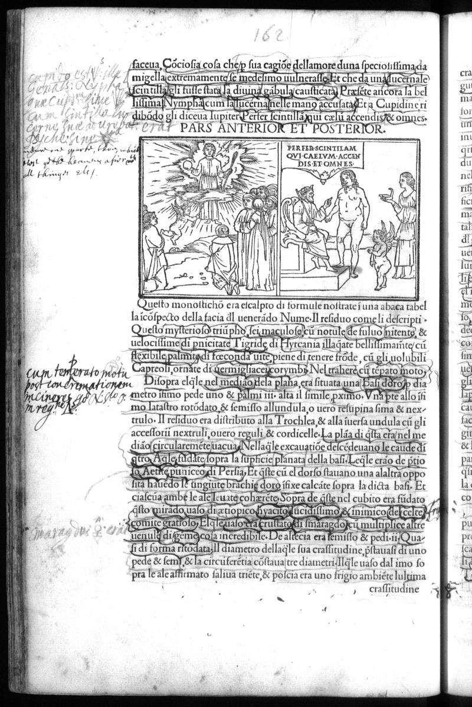

Signature l1v
Folio 81v, Quire l

British Library, London — C.60.o.12
Vision Reading (Phase 3 deep analysis)
Primary hand: Multiple · Hands: 2 · Type: woodcut_page · Sig: l1v
Woodcut: Triumphal chariot panel (PARS ANTERIOR ET POSTERIOR)
Woodcut at top of page showing PARS ANTERIOR ET POSTERIOR — front and rear views of a triumphal chariot. Multiple figures including what appears to be a scene with people gathered around a central altar or fire. Below the woodcut, dense Italian printed text describes the procession.
Condition: Good
Transcription Attempts
left_margin · Latin · LOW
[...] Cantorum [...] Tonalarium [...] motiva [...]
'Cantorum' (of singers), 'Tonalarium' (tonal/musical). Reader is annotating the musical elements of the triumphal procession. The printed text describes music, singing, and instruments
bottom_right · Latin/Italian · LOW
[...] d[...] Amavada [...] du [...] centaura [...] da [...] Poloni [...]
'centaura' (centaur). Reader cataloging mythological figures in the procession
Scholarly Significance
Page 162 is deep in the triumphal procession sequence. The annotations show a reader tracking the musical and mythological content — 'Cantorum' and 'Tonalarium' suggest interest in the HP's descriptions of Renaissance ceremonial music. The triumphal procession section (pp. 149-167) is the most woodcut-dense part of the HP and represents Colonna's most sustained ekphrastic set-piece.
Cross-references: Photo 164 (p.151), Photos 162-180 (procession sequence)
Vision reading (Claude Code, Phase 3)